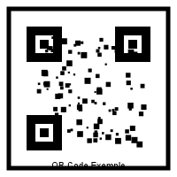

Visites Virtuelles du Lycée
Explorez les différents espaces du lycée Jean Prévost et découvrez les QR codes cachés qui vous mèneront aux mini-jeux.
Sélectionnez un lieu à visiter
Sélectionnez un lieu pour commencer votre visite virtuelle.
Comment explorer
- Cliquez et faites glisser pour regarder autour de vous
- Utilisez les flèches pour vous déplacer dans l'espace
- Cherchez les indices cachés dans chaque espace
- Entrez les indices avec votre appareil pour accéder aux mini-jeux
Indice pour les QR codes
Les QR codes sont cachés dans des endroits stratégiques de chaque espace. Cherchez des objets ou zones qui pourraient avoir un lien avec l'éducation, l'histoire du lycée ou les thèmes des mini-jeux.

Exemple de QR code à chercher
1. Trouvez un indice caché dans la visite virtuelle.
2. Notez les informations qu'il contient.
3. Utilisez-les pour accéder au mini-jeu correspondant.
Votre progression
Mini-jeux complétés: 0/6
Citation: 0%